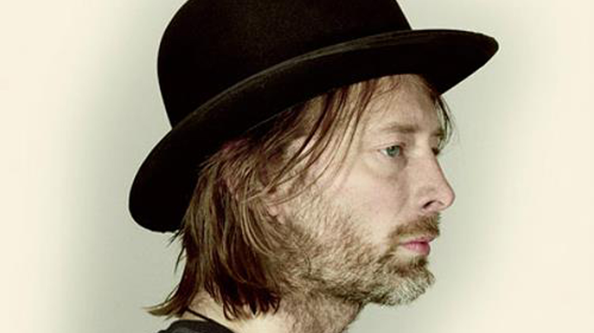
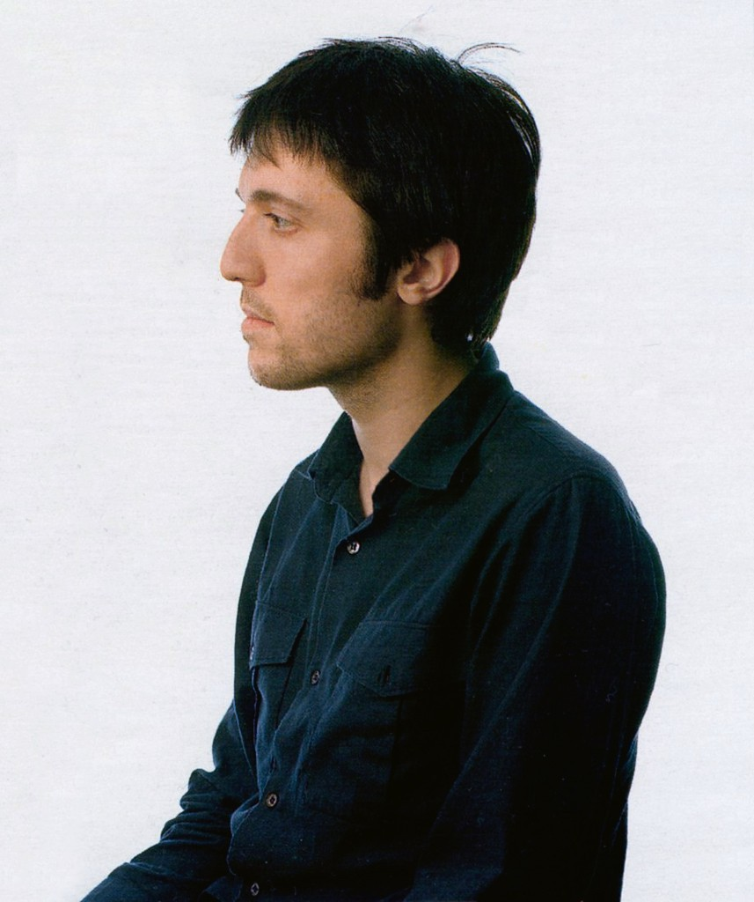

- THOM YORKE
lead vocals_guitar_piano
 - JONNY GREENWOOD
lead guitar, keyboards, other instruments
- COLLIN GREENWOOD
bass
 - PHIL SELWAY
drums, percussion, backing vocals
- ED O'BRIEN
guitar, backing vocals
Radiohead are an English rock band from Abingdon, Oxfordshire, formed in 1985.
Radiohead released their debut single "Creep" in 1992. It became a worldwide hit after the release of the band's debut album, Pablo Honey (1993). Their popularity rose in the United Kingdom with the release of their second album, The Bends (1995). Radiohead's third album, OK Computer (1997), propelled them to international fame; featuring an expansive sound and themes of modern alienation, OK Computer is often acclaimed as one of the landmark records of the 1990s[7] and one of the best albums of all time.
Kid A (2000) and Amnesiac (2001) marked a dramatic evolution in Radiohead's musical style, as they incorporated experimental electronic music, krautrock and jazz influences. Hail to the Thief (2003), a mix of piano and guitar rock, electronics, and lyrics inspired by war, was the band's final album for their record label, EMI. Radiohead self-released their seventh album In Rainbows (2007) as a digital download for which customers could set their own price, to critical and chart success. Their eighth album, The King of Limbs (2011), was an exploration of rhythm and quieter textures, and was also self-released.
Radiohead have sold more than 30 million albums worldwide.[11] Their work places highly in both listener polls and critics' lists of the best music of the 1990s and 2000s.[12][13] In 2005, they were ranked 73rd in Rolling Stone's list of "The Greatest Artists of All Time"; Jonny Greenwood (48th[14]) and O'Brien were both included in Rolling Stone's list of greatest guitarists, and Yorke (66th[15]) in their list of greatest singers.[16] In 2009, Rolling Stone readers voted the group the second best artist of the 2000s.